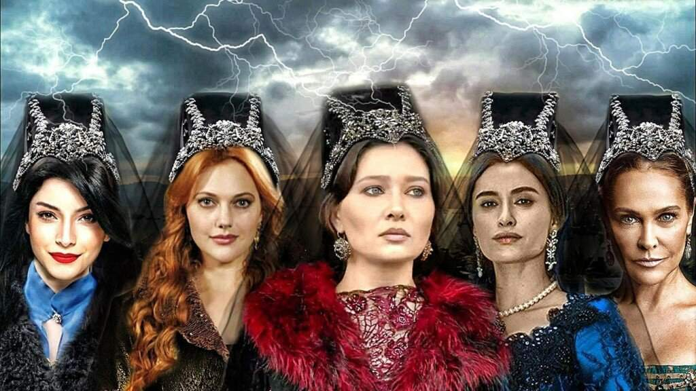
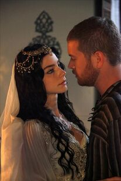
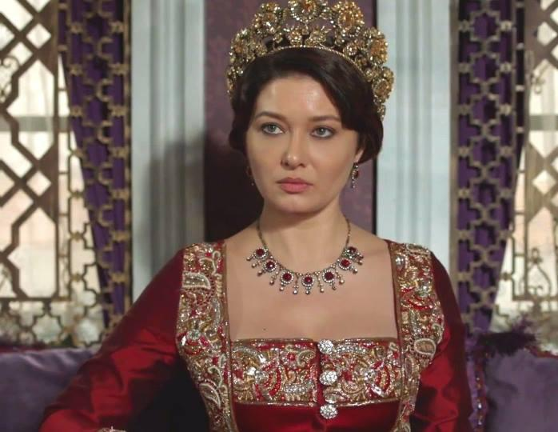

султанат, или султанат женщин (тур. Kadınlar saltanatı, осман. قادينلر سلطنتي), — период в истории Османской империи, когда женщины оказывали большое влияние на государственные дела. Началом женского султаната принято считать 1550 год, а окончанием — 1656 год. В Османской империи, в отличие от других монархий, женщины не допускались к управлению страной. К тому же в период после Мехмеда II, который был официально женат на девушке из семьи Дулкадиридов, султаны официальному браку предпочитали жён-наложниц. Делалось это, вероятно, для того, чтобы не допустить излишнего влияния на султана. Сулейман Кануни отменил это правило, когда сделал своей законной женой Хюррем Султан. На смену Хюррем пришли две хасеки, ставшие впоследствии валиде: сначала Нурбану, а затем Сафие (которая не была официальной женой), оказывавшие большое влияние сначала на мужей (Селим II и Мурад III), а затем и на сыновей (Мурад III и Мехмед III). Считается также, что Михримах тоже оказывала влияние на брата. Пика своей власти султанат женщин достиг при правлении Кёсем Султан, ставшей валиде сразу при двух султанах — Мураде IV и Ибрагиме I, а также после смерти Ибрагима влиявшей на внука. Этот период окончился убийством Кёсем; на смену ей пришла мать Мехмеда IV Турхан Султан, пробывшая валиде 35 лет. Именно по инициативе Турхан в 1656 году на пост великого визиря был назначен Мехмед Кёпрюлю: это назначение и стало концом женского султаната.
Женский Султанат
Валиде Сафие Султан
1550 – 1618.
Золото, падая в грязь, не теряет ценности. Мы — Сафие Султан. Неважно, что с нами и где мы. Истины это не изменит.
Валиде Кесем Султан
(1589 – 1651)
Человек не может умереть, не испытав ту боль, которую заставил прожить других.
Валиде Турхан Султан
1628 — 5 июля 1683)
чтобы стать самым сильным нужно победить самого сильного
Прудставительницы
- Хасеки Хюррем Султан
- Валиде Нурбану Султан
- Валиде Сафие Султан
- Великая Валиде Кесем Султан
- Валиде Турхан
Хюррем Султан

известная как Роксола́на (лат. Roxolana); ок. 1502[1] или ок. 1505[2] — 15 или 18 апреля 1558[3]) — наложница, а затем жена османского султана Сулеймана Великолепного, хасеки, мать султана Селима II. Настоящее имя неизвестно; вариант Алекса́ндра-Анастасия Гаври́ловна Лисо́вская появился в поздней литературной традиции.
Венецианский посол Бернардо Наваджеро называл Хюррем русской: «[donna] … di nazione russa». Другой венецианский посол — Джованни Баттиста Тревизано — называл её «султаншей из Руси»: «Sultana, ch’è di Russia»[8]. Венецианский военачальник Маркантонио Брагадин также называл Хюррем русской: «donna di nazion russa». Михалон Литвин, бывший в середине XVI века послом Великого княжества Литовского в Крымском ханстве, в своём сочинении 1548—1551 годов «О нравах татар, литовцев и москвитян» (лат. De moribus tartarorum, lituanorum et moscorum) при описании торговли рабами указывает, что «и любимейшая жена нынешнего турецкого императора мать перворожденного [сына] его, который будет править после него, похищена была из земли нашей».
Участник посольства Речи Посполитой к османскому султану 1621—1622 годов поэт Самуил Твардовский писал, что турки рассказывали ему о том, что Роксолана была дочерью православного священника из Рогатина (ныне в Ивано-Франковской области, Украина)[9]. Однако Рогатин, как и вся Галичина, не входил в состав Великого княжества Литовского, а был частью Королевства Польского.

Легенды Никаких реальных фактов, подробностей или деталей происхождения и доосманского периода жизни Хюррем не известно и не задокументировано. Лишь в XIX веке в литературе стали появляться художественные домыслы, не имеющие под собой реальной основы. Согласно польской литературной традиции, её настоящее имя было Александра и она была дочерью рогатинского священника Гаврилы Лисовского[11], служившего в местной церкви Святого Духа[12]. В украинской литературе XIX века её стали именовать Анастасией[13], эту версию приняли некоторые советские историки[1][14][15][2]. Галина Ермоленко, со ссылкой на Михаила Орлича[16], сообщает о якобы старой буковинской народной песне, повествующей о красивой девушке из Рогатина по имени Настусенька[17], похищенной крымскими татарами и проданной в султанский гарем[9]. Михаил Орлич сообщал, что слышал эту песню от бабушки. Также он слышал от бабушки, что «будто на свадьбу Насти и Сулеймана ездила в сопровождении казацкой свиты и Настина мать и другие сказки»[18]. Ирина Кныш называет «старой народной» песню, которая на самом деле является изменённым куском поэмы Маврикия Гославского «Поділля» (1827 г.)[19][20]. Аналогичную ошибку допускает и Орлич[18]. Можно только гадать, насколько первичны «старые народные» песни про Роксолану и датируются ли они сроками ранее 1880 года, когда имя Анастасия Лисовская появилось у Михаила Орловского в исторической повести «Роксолана или Анастасия Лисовская»[21]. Во всяком случае киевский историк Владимир Грабовецкий утверждал, что при поисках в архивах в галицких городских и земских актовых книгах не обнаружил даже упоминания рода Лисовских до середины XVI века[22]. Михаил Орловский, вслед за Маврикием Гославским[23], писал, что Роксолана была родом не из Рогатина, а из Чемеровец (ныне в Хмельницкой области)
Нурбну Султан
Афифе́ Нурбану́-султа́н (тур. Afife Nûr-Banû Sultan, осман. نور بانو سلطان; ок. 1525 — 7 декабря 1583) — наложница, затем жена османского султана Селима II (носила титул хасеки), мать Мурада III; первая валиде-султан периода султаната женщин. Нурбану предположительно происходила из двух знатных венецианских семей и была похищена османским адмиралом в возрасте двенадцати лет. Вскоре после того, как она попала в султанский гарем, Нурбану стала наложницей наследника султана Сулеймана I — шехзаде Селима. Долгие годы вплоть до восшествия Селима на османский трон Нурбану оставалась единственной фавориткой шехзаде и матерью его единственного сына — шехзаде Мурада. После восшествия на престол шехзаде Мурада Нурбану получила титул валиде и полагающиеся привилегии; кроме того, всю оставшуюся жизнь она была главным политическим советником сына. Нурбану умерла на пике своего могущества в 1583 году в Стамбуле и была похоронена рядом с мужем в мечети Ая-Софья.
Происхождение
Происхождение Основной считается версия о происхождении Нурбану из двух венецианских знатных семей[1]: её отцом считается Николо Веньер[en], губернатор принадлежавшего Венеции греческого острова Парос и родной брат дожа Венеции Себастьяно Веньера, матерью — Виоланта Баффо. Девочка, носившая имя Сесилия Веньер-Баффо[1][2], считалась незаконнорождённой[1], поскольку её родители не состояли в браке. Кроме того, некоторые историки упоминают, что именем предполагаемой дочери Николо и Виоланты было Оливия[3]. Согласно другим версиям, Нурбану могла быть еврейкой[4][5] из семейства Наси[6] или гречанкой с острова Корфу[7][8].
Титул Валиде Султан
Мать султана Супруг Нурбану скончался в 1574 году и на троне оказался её 28-летний сын Мурад; сама же Нурбану удостоилась титула валиде-султан и полагающихся привилегий. Она первой стала использовать этот титул официально[7]. Став матерью нового султана, Нурбану стала вести активную переписку с иностранными правителями: так долгие годы вплоть до своей смерти Нурбану регулярно посылала письма, а также обменивалась подарками с матерью французских королей Екатериной Медичи[17]. Считается, что Нурбану придерживалась провенецианской политики, а, следовательно, резко антигенуэзской; из-за этого даже ходили слухи, что её отравил генуэзский посол[18]. Мурад опирался на поддержку матери, которая пользовалась огромным авторитетом вплоть до своей смерти в 1583 году. Такое положение дел в государстве не устраивало многих и, в первую очередь, нового великого визиря Синана-пашу, занявшего пост после смерти 1580 году зятя Нурбану. Противостояние матери султана и главного визиря в государстве окончилось за год до смерти Нурбану: Синан-паша был снят с должности и выслан из столицы и, как писал венецианский посол Контарини, мать Мурада III была причастна к смещению, целью же её было посадить на этот пост своего ставленника. С окончанием противостояния матери султана и великого визиря началось новое — между матерью Мурада III и его фавориткой[19]. Как и его отец, Мурад поначалу придерживался отношений лишь с одной наложницей — Сафие, с которой в 1583 году у Нурбану случился конфликт. Нурбану изначально недолюбливала амбициозную Сафие, поскольку та не была её собственным выбором: девушка была куплена Михримах-султан, сестрой Селима, которая подарила её в 1563 году своему племяннику[20]. Нурбану советовала сыну брать других наложниц для блага династии, поскольку к 1581 году в живых оставался только один шехзаде — сын Мурада и Сафие, Мехмед[21]. Остальные сыновья, рождённые Сафие, умерли в раннем детстве, во время или вскоре после рождения. В 1583 году Нурбану обвинила Сафие в колдовстве, которое сделало Мурада импотентом, неспособным взять новую наложницу[22]; нескольких слуг Сафие арестовали и пытали[23]. Вскоре после этого сестра Мурада, Эсмехан-султан, подарила брату двух красивых рабынь, которых он принял и сделал своими наложницами. В течение последующих нескольких лет Мурад стал отцом двадцати сыновей и двадцати семи дочерей[14]. В первой половине правления Мурада количество женщин в его гареме удвоилось, превысив сотню. Для того чтобы предоставить Нурбану-султан более комфортабельные апартаменты и увеличить количество мест для проживания новых наложниц и служанок Мурад приказал перестроить и расширить покои своего гарема[24].
>Кесем Султан
Кесе́м-султа́н, также известна как Махпейке́р-султа́н (тур. Mâh-Peyker Kösem; ? — 2 сентября 1651) — вторая или третья наложница османского султана Ахмеда I и мать султанов Мурада IV и Ибрагима I. Во время правления сыновей носила титул валиде-султан (мать султана) и являлась одной из самых влиятельных женщин в Османской империи. Бабушка султана Мехмеда IV, в начале правления которого правила и носила титул «бюйюк валиде» (бабушка султана). В общей сложности находилась у власти около 30 лет. С её влиянием на Ахмеда связывают сохранение жизни Мустафы I и, тем самым, изменение порядка наследования престола в Османской империи. Убита сторонниками во время готовившегося переворота Турхан-султан.
Происхождение и первые годы в гареме
Нет достоверных свидетельств о её жизни до попадания в гарем, неизвестен даже год рождения[1], однако считается, что она была гречанкой[2] или боснийкой[3]. По-видимому, первое сообщение о её греческом происхождении было в письме итальянского путешественника Пьетро делла Валле. 25 октября 1615 года из Стамбула он писал о Кёсем-султан: «Это была дочь, если я понял правильно, греческого священника, из далёкой страны или города примерно за двести миль от Константинополя»[4]. Христианское имя её неизвестно[5], но распространённая версия (излагаемая в неавторитетных источниках[6]) гласит, что её звали Анастасия[7]. Якобы она была куплена как рабыня санджакбеем Боснии[tr][8] и к пятнадцати годам уже была в гареме[9]. Ей дали имя Махпейкер, что означает «луноликая». Другое её имя — Кёсем, имеющее значение «самая любимая», — дал ей Ахмед, наложницей которого она была[9]. Существуют и другие истолкования имени Кёсем. Пьетро делла Валле, сам изучавший османский язык, писал, что это имя означает «безволосая» (тур. köse — без волос, без бороды), и она получила его за свою кожу, лишённую растительности. Кроме того, согласно Энциклопедии ислама, на османском kösem/kösemen может означать «лидер, вожак стаи, свободный, независимый»[10]. Ахмед стал султаном в 13 лет, у него ещё не было наложниц и детей, что было опасно для династии. Поэтому в нарушение традиций его брат Мустафа был оставлен в живых, а первоочередной задачей юного султана стало рождение наследников. Ему были подарены наложницы. К тому моменту, когда Кёсем попала в гарем Ахмеда, у него уже была как минимум одна фаворитка (хасеки). Старшего сына Ахмеда, Османа, в 1604 году родила Махфируз за несколько месяцев до того, как у Кёсем родился старший сын, Мехмед. Лесли Пирс пишет, что Кёсем-султан была второй или третьей из наложниц[11]. Вероятно, в начале Кёсем не занимала исключительного положения в гареме, поскольку после Османа Махфируз родила ещё как минимум одного сына: Пьетро делла Валле писал, что у султана четверо сыновей от двух жён[12]. Благодаря своему уму и красоте Кёсем стала любимой хасеки Ахмеда[6], в середине 1610-х годов находившийся под влиянием Кёсем-султан Ахмед I выслал в Старый дворец мать своего первенца, Махфируз. Возможно, это о ней писал венецианский посол Контарини, когда сообщил в 1612 году, что султан избил женщину, которая раздражала Кёсем[13]. Кёсем имела множество детей от султана, что позволило ей добиться большой власти путём организации браков своих дочерей и внучек с чиновниками высокого ранга[14].
В правление Мустафы I и Османа II
Во время правления Ахмеда I Кёсем не имела особого влияния в политической сфере. После его смерти 22 ноября 1617 года на трон посадили его брата Мустафу I, который вопреки традициям османского двора не был убит в тот момент, когда Ахмед взошёл на престол. Подобный факт объясняется прежде всего тем, что у Ахмеда при восшествии на престол в возрасте 13 лет ещё не было детей, а значит его смерть грозила прервать династию. Позже сыграли роль два фактора: во-первых, Мустафа был умственно отсталым или, по крайней мере, страдал расстройством психики, и был не опасен в плане мятежа; во-вторых, Мустафу от смерти старалась спасти Кёсем. В 1612 году венецианский посол Симон Контарини сообщал, что Кёсем уговорила Ахмеда не казнить Мустафу. Она говорила, что Ахмед сам не был старшим сыном султана, но судьба привела его на престол. Поэтому Ахмед не должен вредить своему брату, даже если это противоречит обычаю Османов. Её мотив, по словам Контарини, заключался в том, «чтобы милость, проявленная брату Ахмеда, также была применена позже к её сыновьям, братьям [первородного] принца».
После воцарения Мустафы Кёсем-султан была отправлена в старый дворец[11], куда традиционно отправляли всех наложниц и дочерей умерших султанов. Мустафа пробыл султаном всего три месяца, 26 февраля 1618 года он был смещён, хотя и не был убит. Султаном стал 14-летний сын Ахмеда Осман. Мать Османа умерла рано, уже в 1615 году Пьетро делла Валле писал, что «мать перворождённого сына султана мертва»[12]. Ещё с детских лет Османа Кёсем-султан постаралась установить с ним дружеские отношения. Осман в обществе Кёсем-султан и её сыновей катался в карете по городу, пока Ахмед I не запретил эти прогулки в 1616 году. Осман уважительно относился к мачехе и в 1619 году почтил её, будучи султаном, трёхдневным визитом в Старом дворце. Тем не менее перед отъездом на Хотинскую войну Осман приказал казнить шехзаде Мехмеда[11], старшего сына Кёсем, боясь конкурента. Поход был неудачен, османская армия потерпела поражение в Хотинской битве, что обострило конфликт султана с янычарами. 19 мая 1622 года в результате мятежа, поддержанного матерью Мустафы, Халиме-султан, и её зятем Кара Давут-пашой, Осман был низложен, схвачен и посажен в Едикуле, а 20 мая убит[16]. Переживших младенчество детей у Османа не было, хотя у него было несколько хасеки. Султаном снова стал Мустафа, а Халиме опять получила звание валиде. Сулишовский писал в донесении об этих событиях: «Бушевавший четыре дня бунт тотчас прекратился, как будто и не было никаких волнений»[17]. Для Кёсем это был сложный период, поскольку «у Дауд-паши было двое сыновей от дочери султана [Мехмеда III], и он считал, что, если убрать с дороги» оставшихся в живых сыновей султана Ахмеда, «его сыновья когда-нибудь при определённых условиях смогут получить высшую власть», поэтому он организовал покушение на старшего сына Кёсем, Мурада. Збаражский так описал эти события: «Везир послал прежде всего евнуха капы-агу, имевшего немалую власть в серале, чтобы удавить Мурада — старшего из братьев. Однако мать мальчика, жившая в другом, старом серале, получив предупреждение или догадавшись сама, с помощью серальских хаджи, писарей или учителей добилась усиленной охраны сына, чтобы не допустить его убийства. Когда капы-ага пришел душить — а везир находился вблизи — и шнур уже был накинут на шею жертвы, один езоглан из тамошней стражи ударом ножа убил евнуха»[
Валиде-султан
После воцарения Мурада на Кёсем-султан пало подозрение в организации переворота, и ей пришлось оправдываться перед шейх аль-исламом. Будучи матерью нового падишаха, Кёсем стала валиде и переехала из Старого дворца в Топкапы. Мурад IV стал султаном в возрасте всего одиннадцати лет, в связи с чем до 1632 года фактически вся власть была в руках у Кёсем и её партии. Сама Кёсем официально носила титул регента и правила в течение пяти лет[22], до тех пор, пока Мурад не взял правление в свои руки, отстранив мать от государственных дел[6]. Однако он прислушивался к её мнению, ценя её опыт и ум, кроме того, она располагала властью во время частых военных экспедиций Мурада. Она сумела спасти Ибрагима, когда Мурад приказал казнить всех своих братьев[6]. В 1640 году после смерти Мурада Ибрагим наследовал ему как единственный представитель династии, поскольку выживших сыновей у Мурада не было. В первые годы правления Ибрагима власть снова находилась в руках Кёсем. В дальнейшем отношения между матерью и сыном испортились. Психическое состояние Ибрагима, как и ставшее результатом его правления критическое положение османского государства, стремительно ухудшалось. Ибрагим попал под влияние наложниц и выслал мать сначала в летний домик за пределами Топкапы. Затем Ибрагим узнал о том, что Кёсем и великий визирь планируют его сместить, визиря он казнил, мать переселил в сады Искендера-челеби[23]. Начатая Ибрагимом Кандийская война вызывала недовольство у населения[6], а к 1648 году все придворные группировки, включая саму Кёсем, пришли к убеждению о необходимости его скорейшего свержения[24]. В итоге 8 августа 1648 года султан был свергнут и через несколько дней согласно фетве убит[25]. Во главе огромной страны оказался его шестилетний сын и внук Кёсем, Мехмед. С восшествием на престол Мехмеда его мать Турхан получила титул валиде, но все полагающиеся привилегии достались Кёсем, которая взяла титул «бююк валиде (старшая валиде)», никогда более не использованный ни до, ни после. В силу неопытности и возраста — Турхан на тот момент была чуть старше двадцати лет — она была отстранена от власти более опытной Кёсем[26]. Даже на ежедневное содержание Турхан получала 2000 асперов, в отличие от 3000 асперов, которые получала Кёсем, как будучи валиде, так и бююк валиде[27]. Амбициозная Турхан отказалась сдаваться без боя. За три года, что Кёсем провела у власти, Турхан успела приобрести немало сторонников, среди которых оказались глава чёрных евнухов и великий визирь; тем не менее на стороне Кёсем всё также оставались янычары. Несмотря на то, что Кёсем эффективно справлялась с обязанностями валиде-регента, в народе начинались волнения из-за большого влияния янычар на политику страны[28]. Меры, предпринятые великим визирем Мелек Ахмедом-пашой и руководством янычарского корпуса для закрытия бюджетного дефицита, вызвали в августе 1651 года бунт в столице[21].